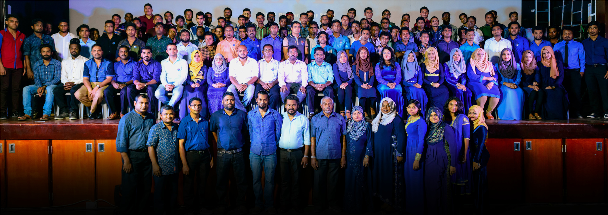

EVE Group of Companies

“EVE” is the culmination of the visionary dream of our Chairman and Founder Member Mr. Hussain Mohamed Fulhu. It had its humble beginnings as a sole proprietorship in 1994, whose name was synonymous with ready made garments, especially various brands of jeans, both in the retail as well as wholesale industry. In retrospect, as the years progressed with the ever changing demand for garments in the Maldivian market, EVE too expanded. EVE SALE - a shop dedicated to selling low-cost garments and EVE SHINE - a shop dedicated to selling fashion accessories were introduced into the market.

However, by 2006, as the fashion market in Maldives changed, all shops under the EVE banner closed except for EVE SALES. Today EVE SALE continues to uphold the name and legacy of the era, being used primarily as a showroom for our EVR GARMENT Products.

Currently, EVE GROUP OF COMPANIES has set hold in the Maldivian business community through its sister companies, namely EVE GARMENTS PVT LTD, EVE CUSHION PVT LTD, and EVE CONSTRUCTION PVT LTD. Each company has its distinctive business style and functionality - engaging with the business community and building its reputation and trust with customers and island communities throughout the whole country.
EVE GARMENTS PVT LTD was introduced with the aim of making school activity uniform, which is sold in EVE SALES Shop. Since initiation, production has been in-house; primarily in our factories. EVE CUSHIONS PVT LTD was established as our upholstery and canvas manufacturing unit. It serves individual customers and takes orders for bulk production. EVE CONSTRUCTION PVT LTD was established with a vision to lead in the field of civil construction, by providing the best service to the fulfillment of all our clients. Being small but steady in the beginning, many projects of varied complexities have been archived.
EVE GROUP OF COMPANIES has always built good rapport with its customers and public in general. Through its many achievements of recognition as an industry leading business at a national level, to its varied corporate social responsibility projects supporting education, sports and entertainment sectors of the country, EVE has established itself as a household name worthy of instant recognition and trust throughout the island nation of Maldives.